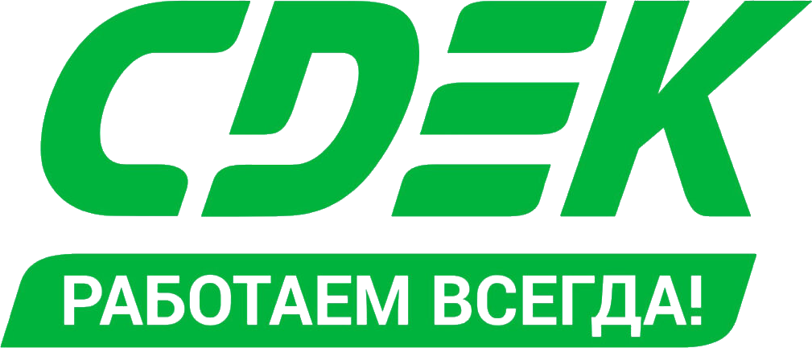

1. ОБЩИЕ ПОЛОЖЕНИЯ
1.1 НАЗНАЧЕНИЕ ДОКУМЕНТА
Настоящая политика в отношении обработки персональных данных субъектов ПДн (далее –
Политика) является основополагающим внутренним документом, регулирующим вопросы обработки персональных
данных субъектов ПДн в ИП. Викторов Ю.В. (далее – Сдэк 21 Век). Действие настоящей Политики не
распространяется на обработку персональных данных сотрудников Сдэк 21 Век, их родственников, соискателей
вакантных должностей, иных субъектов ПДн прямо не обозначенных в настоящей Политике, поскольку эти отношения
регулируются другими внутренними нормативными актами. Настоящая Политика разработана в соответствии с пп. 2
ч. 1 статьи 18.1 Федерального закона от 27 июля 2006 года №152 «О персональных данных» и предназначена для
ознакомления неограниченного круга лиц путём опубликования на официальном сайте Общества cdek21vek.ru.
Политика раскрывает категории персональных данных субъектов ПДн, обрабатываемых в Обществе, цели, способы и
принципы обработки, права субъектов ПДн, а также перечень мер, применяемых Сдэк 21 Век в целях обеспечения
безопасности ПДн. Настоящая Политика определяет порядок и условия осуществления обработки персональных
данных субъектов ПДн, устанавливает процедуры, направленные на обеспечение безопасности персональных данных
и предотвращение нарушений законодательства Российской Федерации, устранение последствий нарушений.
Руководство Сдэк 21 Век осознает важность и необходимость обеспечения безопасности персональных данных и
поощряет постоянное совершенствование системы защиты персональных данных. Положения настоящей Политики
являются основой для разработки внутренних нормативно-методических документов, регламентирующих вопросы
обработки и защиты персональных данных в Обществе. Утверждение и пересмотр Политики проводится каждые три
года, а также:
при изменении нормативной базы, затрагивающей принципы и (или) процессы обработки персональных данных в
Обществе;
при создании новых или внесении изменений в существующие процессы обработки персональных данных клиентов.
1.2 НОРМАТИВНЫЕ ССЫЛКИ
Федеральный закон РФ от 27.07.2006 № 152-ФЗ «О персональных данных». Постановление Правительства РФ от 01.11.2012 № 1119 «Об утверждении требований к защите персональных данных при их обработке в информационных системах персональных данных».
1.3 ОБЛАСТЬ ДЕЙСТВИЯ
Действие настоящей Политики распространяется на все процессы Общества, в рамках которых осуществляется обработка персональных данных субъектов ПДн, как с использованием средств вычислительной техники, в том числе с использованием информационно-телекоммуникационных сетей, так и без использования таких средств. Настоящая Политика применяется в частности, но не ограничиваясь: при навигации на сайте cdek21vek.ru без совершения заказа на оказание услуг, а также при пользовании сервисами, предложенными на сайте cdek21vek.ru, в том числе без выполнения регистрации на сайте cdek21vek.ru; при выполнении регистрации на сайте cdek21vek.ru.; при оформлении заказа на сайте cdek21vek.ru или в офисе Общества; при ином использовании сайта cdek21vek.ru в соответствии с Пользовательским соглашением.
1.4 ИСПОЛЬЗУЕМЫЕ СОКРАЩЕНИЯ
ИСПДн – информационная система персональных данных.
Сдэк 21 Век – ООО «СДЭК 21 ВЕК».
ПДн – персональные данные.
РФ – Российская Федерация.
Сайт – cdek21vek.ru.
1.5 ИСПОЛЬЗУЕМЫЕ ТЕРМИНЫ И ОПРЕДЕЛЕНИЯ
Автоматизированная обработка персональных данных – обработка персональных данных с помощью средств вычислительной техники. Информационная система персональных данных – совокупность содержащихся в базах данных персональных данных и обеспечивающих их обработку информационных технологий и технических средств. Конфиденциальность персональных данных – Обязательное для соблюдения оператором или иным получившим доступ к персональным данным лицом требование не раскрывать третьим лицам и не распространять персональные данные без согласия субъекта персональных данных, если иное не предусмотрено федеральным законом. Обработка персональных данных – любое действие (операция) или совокупность действий (операций), совершаемых с использованием средств автоматизации или без использования таких средств с персональными данными, включая сбор, запись, систематизацию, накопление, хранение, уточнение (обновление, изменение), извлечение, использование, передачу (распространение, предоставление, доступ), обезличивание, блокирование, удаление, уничтожение персональных данных. Персональные данные – любая информация, относящаяся к прямо или косвенно определенному или определяемому физическому лицу (субъекту персональных данных), являющаяся конфиденциальной информацией ограниченного доступа, не составляющей государственную тайну. Пользователь — физическое лицо, действующее в своих интересах или в интересах других лиц, акцептовавшее Пользовательское соглашение, размещенное на Сайте, имеющее доступ к Сайту и использующее его, независимо от факта регистрации на Сайте. Сайт – совокупность информации, текстов, графических элементов, дизайна, изображений, фото и видеоматериалов, иных результатов интеллектуальной деятельности, а также программных средств для ЭВМ, обеспечивающих публикацию для всеобщего обозрения информации и данных, объединенных общим целевым назначением, посредством технических средств, применяемых для связи между ЭВМ и сети Интернет. Сайт находится в сети Интернет по адресу: cdek21vek.ru. Субъект персональных данных – физическое лицо, носитель персональных дынных, чьи персональные данные переданы Обществу для обработки. Применительно к настоящей Политике к субъектам ПДн относятся: Клиент, Пользователь, физическое лицо, чьи ПДн получены Сдэк 21 Век от Заказчика курьерских услуг Общества. Трансграничная передача персональных данных – передача персональных данных на территорию иностранного государства органу власти иностранного государства, иностранному физическому лицу или иностранному юридическому лицу.
2. ОСНОВНЫЕ ПОЛОЖЕНИЯ
2.1 ПРИНЦИПЫ ОБРАБОТКИ ПЕРСОНАЛЬНЫХ ДАННЫХ
Сдэк 21 Век обеспечивается правомерность обработки ПДн субъектов ПДн, а также надлежащий уровень безопасности обрабатываемых ПДн. Обработка ПДн субъектов ПДн в Обществе осуществляется на законной и справедливой основе и ограничивается достижением конкретных, заранее определенных и законных целей. Обработке подлежат только те ПДн субъектов ПДн, которые отвечают целям их обработки. Содержание и объем обрабатываемых ПДн соответствуют заявленным целям обработки, избыточность обрабатываемых данных не допускается. Сдэк 21 Век обеспечивается точность обрабатываемых ПДн субъектов ПДн, их достаточность и, в необходимых случаях, актуальность по отношению к целям обработки. Сдэк 21 Век принимает и обеспечивает принятие необходимых мер по удалению или уточнению неполных, или неточных ПДн субъектов ПДн. Сдэк 21 Век в своей деятельности исходит из того, что субъект ПДн предоставляет точную и достоверную информацию во время взаимодействия с Сдэк 21 Век, извещает представителей Общества об изменении своих данных. Сдэк 21 Век хранит ПДн в форме, позволяющей определить субъекта ПДн, не дольше, чем этого требуют цели обработки ПДн, и, уничтожает ПДн по достижении целей их обработки или в случае утраты необходимости в достижении этих целей, если иное не предусмотрено федеральным законом.
2.2 ЦЕЛИ ОБРАБОТКИ ПЕРСОНАЛЬНЫХ ДАННЫХ
Целью обработки персональных данных субъектов ПДн является: · обеспечение защиты прав и свобод субъекта ПДн при обработке его ПДн; · обеспечение Пользователю возможности взаимодействовать с Сайтом, в частности направление уведомлений, запросов и информации, связанных с оказанием услуг, а также обработка запросов и заявок от Пользователя, предоставление доступа к персонализированным ресурсам Сайта, на сайты или сервисы партнеров Общества в соответствии с Пользовательским соглашением; · направление субъекту ПДн по информационным системам связи, смс, электронной почте и иным средствам связи информации о специальных предложениях, новых услугах, событиях, любых информационных сообщений, включая рекламу и иных сведений от имени Общества или от имени партнеров Общества; · оказание услуг курьерской доставки клиентам в рамках договора возмездного оказания курьерских услуг; · ведение уставной деятельности Общества в части заключения, учета и исполнения договоров с контрагентами (заказчики, подрядчики, исполнители и т.д.); · проведение опросов и исследований, направленных на выявление удовлетворенности/неудовлетворенности клиента услугами Общества, улучшение качества услуг; проведение статистических, маркетинговых и иных исследований на основе обезличенных данных.
2.3 ПРАВОВЫЕ ОСНОВАНИЯ ОБРАБОТКИ ПЕРСОНАЛЬНЫХ ДАННЫХ
Обработка ПДн субъектов ПДн осуществляется на основании:
Гражданского кодекса РФ (гл.39 ГК РФ);
Налогового кодекса РФ;
устава Общества;
договора возмездного оказания курьерских услуг, заключенный между Сдэк 21 Век и клиентом (Оферта);
пользовательского соглашения, размещенного на Сайте;
согласия субъекта ПДн на обработку ПДн.
2.4 ОБЪЕМ И КАТЕГОРИИ ОБРАБАТЫВАЕМЫХ ПЕРСОНАЛЬНЫХ ДАННЫХ
Сдэк 21 Век осуществляет обработку следующих категорий:
персональных данных физического лица — пользователя сайта: имя, адрес электронной почты, адрес (город,
улица, номер дома, номер квартиры), номер телефона, сведения об используемом браузере, местоположение,
IP-адрес, запрашиваемые Интернет-страницы, источник захода на Сайт cdek21vek.ru;
персональных данных физического лица — клиента, чьи ПДН стали известны Обществу в связи с заключением и
исполнением договора оказания услуг: ФИО, данные документа, удостоверяющего личность, адрес (страна, город,
улица, номер дома, номер квартиры), адрес электронной почты, номер телефона (домашний, мобильный);
персональных данных физического лица, чьи ПДн получены Сдэк 21 Век от Заказчика курьерских услуг в
рамках договора возмездного оказания курьерских услуг: ФИО, данные документа, удостоверяющего личность,
адрес (страна, город, улица, номер дома, номер квартиры, номер телефона (домашний, мобильный);
В Обществе не осуществляется обработка ПДн клиентов, касающихся расовой, национальной принадлежности,
политических взглядов, религиозных или философских убеждений, состояния здоровья, интимной жизни,
биометрических персональных данных.
3. Порядок и условия обработки персональных данных субъектов пдн
Оператор получает ПДн субъектов ПДн: · путем личного сообщения клиентом своих данных при оформлении доставки в офисе; · путем внесения клиентом/Пользователем своих данных на Сайте; · путем заполнения субъектом ПДн маркетинговых листовок (купонов); · от третьих лиц (клиентов, контрагентов); · из общедоступных источников. Оператор получает и начинает обработку ПДн субъекта РФ с момента получения его согласия. Согласие на обработку ПДн может быть дано субъектом РФ в любой форме, позволяющей подтвердить факт получения согласия, если иное не установлено федеральным законом: в письменной, устной или иной форме, предусмотренной действующим законодательством, в том числе посредством совершения Субъектом ПДн конклюдентных действий. В случае внесения субъектом ПДн своих данных на Сайте, согласие на обработку ПДн считается предоставленным субъектом ПДн посредством совершения им следующих конклюдентных действий в совокупности: путем проставления специального знака – «галочки» или «веб-метки» в специальном поле на Сайте при заказе обратного звонка, при обращении в форме обратной связи, при регистрации в личном кабинете, при оформлении заявки на вызов курьера и нажатия соответствующей кнопки расценивается однозначно, как принятие условий Пользовательского соглашения и предоставление согласия на обработку ПДн в объеме, для целей и в порядке, предусмотренных в предлагаемом перед проставлением специального знака для ознакомления тексте (текст Согласия — Приложение № 2 к настоящей Политике). В случае заполнения субъектом ПДн маркетинговых листовок, ставя подпись, Субъект ПДн выражает свое согласие на принятие условий Публичной оферты, изложенных в Договоре возмездного оказания курьерских услуг и Регламенте возмездного оказания курьерских услуг, размещенных на сайте cdek21vek.ru, что означает в том числе и согласие на обработку ПДн. В случае получения ПДн от третьих лиц (клиентов, контрагентов) обязанность по получению согласий на обработку и передачу таких ПДн лежит на этих третьих лицах. В случае получения ПДн из общедоступных источников информации получение согласия субъектов ПДН не требуется. Согласие считается полученным с момента проставления специального знака и действует до момента направления Субъектом ПДн соответствующего заявления о прекращении обработки ПДн по месту нахождения Оператора или по электронному адресу: cdek21vek@cdek.ru. В случае отсутствия согласия Субъекта на обработку его ПДн, такая обработка не осуществляется. Сдэк 21 Век обеспечивает запись, систематизацию, накопление, хранение, уточнение (обновление, изменение), извлечение, использование, передачу (предоставление, доступ), обезличивание, удаление, уничтожение ПДн с использованием баз данных, находящихся на территории Российской Федерации. Сдэк 21 Век в ходе своей деятельности поручает обработку ПДн третьим лицам с согласия субъектов ПДн, если иное не предусмотрено действующим законодательством Российской Федерации, при обязательном условии соблюдения лицом, осуществляющим обработку ПДн по поручению Общества, принципов и правил обработки, а также обеспечения безопасности ПДн, установленных законодательством Российской Федерации. Сдэк 21 Век не размещает ПДн субъектов ПДн в общедоступных источниках. С целью обеспечения безопасности ПДн при их обработке Сдэк 21 Век принимает необходимые и достаточные правовые, организационные и технические меры для защиты ПДн от неправомерного или случайного доступа к ним, уничтожения, изменения, блокирования, копирования, предоставления, распространения, а также от иных неправомерных действий в отношении ПДн. В Обществе назначен ответственный за организацию обработки ПДн, который получает указания непосредственно от генерального директора Общества и подотчетен ему. Перечень лиц, допущенных к обработке ПДн, определяется распоряжением Исполнительного органа и внутренними локальным нормативными актами Общества. Указанные лица должны быть ознакомлены до начала работы: · с положениями законодательства Российской Федерации о ПДн, в том числе с требованиями к порядку защиты ПДн; · с документами, определяющими действия Оператора в отношении обработки ПДн, в том числе с настоящей Политикой и Положением об обработке и защите ПДн с приложениями и изменениями; · с локальными актами по вопросам обработки ПДн. Доступ к ПДн субъектов ПДн предоставляется сотрудникам Оператора в соответствии с их должностными обязанностями. Сотрудники Оператора, осуществляющие обработку ПДн субъектов ПДн, должны быть проинформированы о факте такой обработки, об особенностях и правилах такой обработки, установленных нормативно-правовыми актами и внутренними документами Оператора. Сотруднику Общества, имеющему право осуществлять обработку ПДн субъектов ПДн, предоставляются уникальный логин и пароль для доступа к соответствующей информационной системе в установленном порядке. Сведения о присвоенных Сотруднику идентификаторах (логин и пароль) относятся к конфиденциальным и не подлежат передаче Сотрудником третьим лицам. Сотрудник обеспечивает соблюдение требований о конфиденциальности и несет риск последствий, связанных с нарушением таких требований. Процедура аутентификации осуществляется техническим центром работодателя при осуществлении доступа сотрудника в информационную систему путем сопоставления введенных логина и пароля соответствующим присвоенным сотруднику логину и паролю, информация о которых содержится в информационной системе. В случае успешного прохождения процедуры аутентификации Сотрудник получает возможность осуществления операций с ПДн субъекта ПДн в информационной системе. Хранение ПДн субъектов ПДн, цели обработки которых различны, осуществляется раздельно в рамках информационной системы или, при условии хранения на материальных носителях, в рамках структуры дел соответствующего подразделения Оператора. Хранение ПДн субъектов ПДн осуществляется Сдэк 21 Век в форме, позволяющей определить субъекта ПДн, не дольше, чем этого требуют цели обработки ПДн, если срок хранения ПДн не установлен федеральным законом, договором, стороной которого, выгодоприобретателем или поручителем по которому является субъект ПДн.
4. ОБРАБОТКА ЗАПРОСОВ СУБЪЕКТОВ ПЕРСОНАЛЬНЫХ ДАННЫХ
Для обеспечения соблюдения установленных законодательством прав субъектов ПДн, в Обществе разработан и введён порядок работы с обращениями и запросами субъектов ПДн, а также порядок предоставления субъектам ПДн информации, установленной законодательством РФ в области персональных данных. Данный порядок обеспечивает соблюдение следующих прав субъекта ПДн: · право на получение информации, касающейся обработки ПДн соответствующего субъекта ПДн, в том числе содержащей: · подтверждение факта обработки ПДн; · правовые основания и цели обработки ПДн; · цели и применяемые Сдэк 21 Век способы обработки ПДн; · наименование и место нахождения Общества, сведения о лицах (за исключением работников Общества), которые имеют доступ к ПДн или которым могут быть раскрыты ПДн на основании договора с Сдэк 21 Век или на основании иных требований Федерального закона РФ от 27.07.2006 №152-ФЗ «О персональных данных»; · обрабатываемые ПДн, относящиеся к соответствующему субъекту ПДн, источник их получения, если иной порядок представления таких ПДн не предусмотрен Федеральным законом РФ от 27.07.2006 №152-ФЗ «О персональных данных»; · сроки обработки ПДн, в том числе сроки их хранения; · порядок осуществления субъектом ПДн прав, предусмотренных Федеральным законом РФ от 27.07.2006 №15-ФЗ «О персональных данных»; · информацию об осуществляемой или о предполагаемой трансграничной передаче ПДн; · наименование или фамилию, имя, отчество и адрес лица, осуществляющего обработку ПДн по поручению Общества, если обработка поручена или будет поручена такому лицу; · иные сведения, предусмотренные Федеральным законом РФ от 27.07.2006 №152-ФЗ «О персональных данных» или другими требованиями законодательства в области персональных данных; · право на уточнение, блокирование или уничтожение своих ПДн, если ПДн являются неполными, устаревшими, неточными, незаконно полученными или не являются необходимыми для заявленной цели обработки, а также принимать предусмотренные законодательством РФ в области ПДн меры по защите своих прав. Запрос субъекта ПДн должен содержать номер основного документа, удостоверяющего личность субъекта ПДн или его законного представителя, сведения о дате выдачи указанного документа и выдавшем его органе, сведения, подтверждающие участие субъекта ПДн в отношениях с Сдэк 21 Век (номер договора, дата заключения договора, условное словесное обозначение и (или) иные сведения), либо сведения, иным образом подтверждающие факт обработки ПДн Сдэк 21 Век, подпись субъекта персональных данных или его представителя, дату обращения. Работники Общества не имеют право отвечать на вопросы, связанные с передачей или разглашением ПДн по телефону или факсу в связи с тем, что в таком случае нет возможности идентифицировать личность обращающегося человека. Запросы субъектов должны быть направлены по адресу: ООО «СДЭК-Глобал», Россия, 630009, г. Новосибирск, ул. Большевистская, 101, БЦ «РИМ», либо электронным письмом по адресу: cdek21vek@cdek.ru.
ПРИЛОЖЕНИЕ №1
Форма Согласия на обработку персональных данных для пользователей сайта Руководителю ИП
Викторов Ю.В. ОГРН 31950 8100 155845
Согласие на обработку персональных данных Пользователей сайта Настоящим свободно, своей волей и в своем
интересе я проинформирован и даю согласие о том, что в соответствии с Федеральным законом от 27.07.2006 N
152-ФЗ «О персональных данных», предоставленная мною информация, включая данные о:
· фамилия, имя, отчество;
· адрес электронной почты;
· адрес (город, улица, номер дома, номер квартиры), необходим для заборадоставки отправления;
· номер телефона;
· сведения об используемом браузере;
· местоположение;
· IP-адрес;
· данные файлов cookie;
· запрашиваемые Интернет-страницы;
· источник захода на Сайт cdek21vek.ru
будет внесена в информационные системы Оператора по обработке персональных данных. Я предоставляю право
обрабатывать эти данные с целью организации процесса предоставления запрошенной мной информации об услугах
Оператора, получения обратной связи от Оператора, заказа услуг, регистрации Личного кабинета, за исключением
случаев, когда прямо установлено иное. Мои персональные данные будут использованы при запросе мной Обратного
звонка, предоставлении обратной связи, моей регистрации и (или) авторизации на сайте cdek21vek.ru в целях:
· обеспечения Пользователю возможности взаимодействовать с Сайтом, в частности направление уведомлений,
запросов и информации, связанных с оказанием услуг, а также обработка запросов и заявок от Пользователя;
· оказания услуг курьерской доставки в рамках договора возмездного оказания курьерских услуг (Оферта);
· проведения опросов и исследований, направленных на выявление удовлетворенности/неудовлетворенности
услугами Общества, улучшения качества услуг;
· проведения статистических и иных исследований на основе обезличенных данных;
· информирования меня по информационным системам связи, смс, электронной почте и иным средствам связи о
специальных предложениях, акциях, новых услугах, событиях, скидках и иных сведениях, связанных с
деятельностью Оператора и/или его партнеров.
В связи с указанными выше целями я понимаю, что мои персональные данные могут быть сообщены третьим
лицам, и даю на это согласие. В случае предоставления мной данных третьих лиц, включая контактные данные, я
подтверждаю, что Субъект персональных данных уведомлен об осуществлении обработки его персональных данных
Оператором по обработке персональных данных. Я даю свое согласие на использование предоставленных
персональных данных для направления коммерческой информации Оператором по обработке персональных данных и
третьими лицами по указанному телефону и адресу электронной почты. Я предоставляю право отправлять мне
информацию об услугах, предложениях и рекламных акциях Оператора и/или его Партнеров, в том числе с помощью
электронных и мобильных средств связи. Настоящее согласие действует со дня его предоставления до дня отзыва
в письменной форме. Настоящим я проинформирован о том, что я вправе требовать уточнения моих персональных
данных, их блокирования или уничтожения в случае, если персональные данные являются неполными, устаревшими,
неточными или не являются необходимыми для заявленной цели обработки, я также в любой момент могу
потребовать прекращения обработки персональных данных, направив соответствующее заявление по месту
нахождения Оператора либо направить электронное письмо по электронному адресу: cdek21vek@cdek.ru. Я
пониманию, что результатом отзыва согласия в отношении части данных и/или в отношении некоторых целей может
привести к полному прекращению обработки моих персональных данных для реализации целей настоящего согласия.
Также я проинформирован о том, что я в любой момент могу отказаться от получения коммерческой информации,
направив свое заявление по месту нахождения Оператора либо направить электронное письмо по электронному
адресу: cdek21vek@cdek.ru.